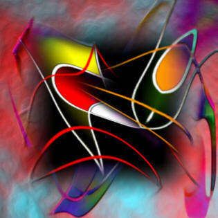

Siegfried Schreck
digitally drawn art
NOTES
Siegfried Schreck is based in Hamburg, Germany. He is an artist, poet, songwriter and digital photographer, and currently has a number of art exhibits throughout Germany. He is married and has worked as a sailor, miner and now as a technical foreman on the waterfront. "I feel myself as a warrior between poetry and painting," he writes. He uses Photoshop, Picture Publisher and other graphic programs in his digital work. His art embodies a free and generous spirit.There are 21 artworks in this exhibit.
We Make Music
A poem by Siegfried Schreck
Siegfried Schreck's website
art and poetry by Siegfried Schreck
Night music
